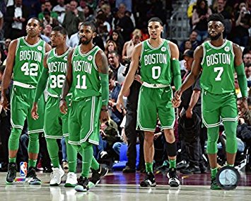

The Celtics are looking very promising to come out of the eastern conference, especially with LeBron gone. Last year, the Celtics best and second best player went down with an injury before the playoffs. This really helped their young players develop, but they ended up doing more than just develop. They made it to game 7 of the eastern conference finals where they lost to LeBron and the Cavaliers. This year with Kyrie Irving, Gordan Hayward, Jayson Tatum, Jaylen Brown, Al Horford, Terry Rozier, and many other role players that are going to help this team get banner number 18!
Adam Lovejoy - BUA 235 course (Information Systems & Tech for Business) - UMaine's business school - Fall 2018